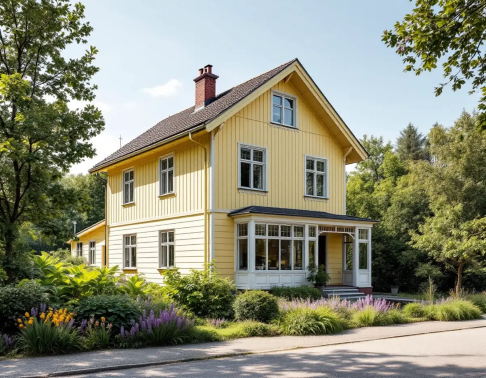
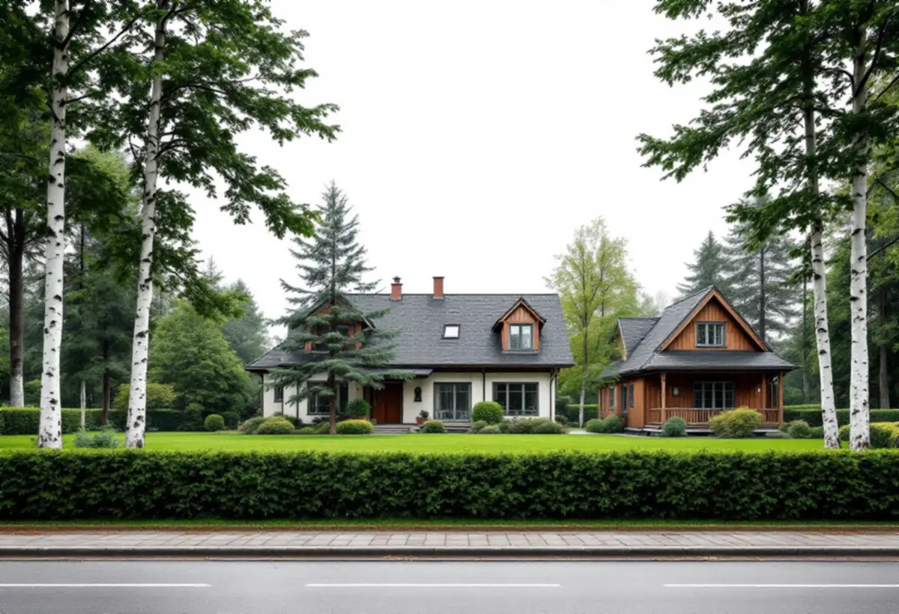

Platsbesök
Vi ser huset, tomten och avståndet till grannar, gata och spår.
Sollentunas villastäder är gamla och lummiga, och kommunen vill att de ska förbli det. Det märks när du vill dela tomten, bygga ett hus till eller bygga ut det du har. Geal Entreprenad AB driver byggprojekt i Sollentuna som total entreprenad, med en kontakt från skiss till slutbesiktning, och vi börjar med vad detaljplanen och översiktsplanen säger om just din tomt.

I Översiktsplan för Sollentuna med sikte på 2040 skriver kommunen att även de äldre villaområdena påverkas av ett förändringstryck när marken blir mer begränsad. Många områden har stora tomter som bidrar till grönstrukturen och till att dagvattnet kan tas om hand. Villastadsdelarna växte fram under 1900-talets första hälft, och planen beskriver deras struktur som robust trots senare avstyckningar och förtätningar, men konstaterar att den gröna lummigheten kan förstöras av alltför stark förtätning.
Planen säger också att enbostadstraditionen bör vara norm i villaområdena. Fler bostäder i ett hus ger fler bilplatser och ibland fler lovfria tillägg på tomten, och det kan enligt kommunen påverka lummigheten negativt.
Alla delar av kommunen ser inte ut så. I Sjöberg styckades de första villatomterna av redan på 1920-talet, men området präglades av skog och fritidshus fram till 1960-talet, och den stora utbyggnaden skedde under 1970-, 80- och 90-talen.

Översiktsplanen är tydlig om tomtstorlekar. Tomter under 800 kvadratmeter, räknat utan skaft, bör inte tillkomma generellt. För villaområden som omfattas av kulturmiljöplanen är riktlinjen 1 000 kvadratmeter, utom där gällande detaljplan anger 800. Avstyckningar och förtätningar ska inte tillåtas i Norrvikens villastad, Väderholmen, Skansen och andra områden där kulturmiljöplanen anger att karaktären ska behållas. I Edsvikens villastad bör de bara tillåtas där det går utan att gatumiljöns karaktär förändras.
Beslut som möjliggör förtätning ska enligt planen ta hänsyn till fastighetens storlek och form, terrängen, befintlig växtlighet, var husen placeras och hur stor del av tomten som blir kvar som grönyta för dagvatten. Planen nämner särskilt placeringen av huvudbyggnad, garage, biluppställning och utfart.
Innan vi ritar ett nytt hus på en delad tomt går vi därför igenom detaljplanen och om området finns med i kulturmiljöplanen. Ibland är en tillbyggnad eller ett attefallshus ett bättre sätt att få mer yta på samma tomt.
Sollentuna kommun beskriver en tillbyggnad som varje åtgärd som ökar byggnadens volym, uppåt, åt sidan eller nedåt. Ett en- eller tvåbostadshus får byggas till utan bygglov med sammanlagt högst 30,0 kvadratmeter, om tillbyggnaden inte går över taknocken. Tidigare attefallstillbyggnader, lovfria takkupor och skärmtak räknas in i de 30 kvadratmeterna.
Bygglov krävs om tillbyggnaden hamnar närmare tomtgränsen än 4,5 meter utan grannens skriftliga medgivande, om fastigheten eller huset är kulturhistoriskt värdefullt och, något som berör många i Sollentuna, om den placeras närmare än 30,0 meter från mitten av ett järnvägsspår utan att infrastrukturförvaltaren skriftligen har medgett det. Bor du i radhus eller kedjehus beror möjligheterna på hur husen är byggda ihop, och kommunen hänvisar då till sin vägledning.
Lovfria tillbyggnader får strida mot detaljplanen. Bygger du ett nytt en- eller tvåbostadshus och vill göra en sådan tillbyggnad samtidigt, ska den ingå i bygglovsansökan för det nya huset. Anmälan krävs om tillbyggnaden innebär ingrepp i bärande konstruktion, nya installationer för ventilation, vatten och avlopp eller eldstad, eller om brandskyddet påverkas.
När tillbyggnaden kräver lov ska ansökan enligt kommunen innehålla ett förslag till kontrollplan, en situationsplan på tomtkarta och ritningar i form av plan, fasad och sektion. För enklare åtgärder kan situationsplanen göras på en tomtkarta i skala 1:400. Äldre ritningar på huset kan sökas fram utan kostnad i kommunens bygglovsarkiv, och de är en bra grund för de nya.
Vi tar fram underlaget, skissar tillbyggnaden mot de gamla ritningarna och samordnar sedan bygget med behöriga installatörer för el och VVS. Ska den nya delen få ett eget badrum, läs mer under badrumsrenovering i Sollentuna.
Vi ser huset, tomten och avståndet till grannar, gata och spår.
Detaljplan, kulturmiljöplan och husets ritningar från bygglovsarkivet går vi igenom.
Ett skriftligt förslag som skiljer på ROT-berättigat arbete och övrigt.
Kontrollplan, situationsplan och ritningar tas fram när lov eller anmälan krävs.
Vi samordnar alla hantverkare och installatörer.
Resultatet gås igenom med dig och handlingarna lämnas över.
Du kan få rotavdrag med 30 procent av arbetskostnaden, högst 50 000 kronor per person och år. Rot och rut får tillsammans vara högst 75 000 kronor. Du ska äga bostaden när arbetet görs, och material och resor räknas inte.
En tillbyggnad ger avdrag om den sitter ihop med husets yttervägg till minst 75 procent av någon sida, eller om det finns en dörr mellan tillbyggnaden och huset. Ett helt nytt hus på en avstyckad tomt ger aldrig rotavdrag. Är huset yngre än fem år får arbetet bara återställa det till ursprungligt skick. Avdraget dras direkt på vår faktura.
Tillbyggnadens storlek och grundläggning, hur den ansluts till huset, om bygglov och kontrollplan behövs och vilka installationer den nya delen ska ha. Platsbesöket är gratis och du får ett skriftligt kostnadsförslag.
Total entreprenad för villan.
Byggfirma →Takbyte, takbesiktning och plåtarbeten.
Takläggare i Sollentuna →Norrviken, Tureberg och Edsberg.
Takrenovering i Sollentuna →Radhus, villa och en extra bostad.
Attefallshus i Sollentuna →Villastad, radhus och ventilationen.
Badrumsrenovering i Sollentuna →Ny kulör och lov i villastaden.
Fasadmålning i Sollentuna →Villor och radhus i Sollentuna.
Fasadrenovering i Sollentuna →Buller, ljudglas och radhus i Sollentuna.
Fönsterbyte i Sollentuna →Täta gamla fönster med ventilationen i åtanke.
Fönsterrenovering i Sollentuna →Radhus i Sjöberg och villor nära stationerna.
Golvläggare i Sollentuna →Massivt trä eller lamell – vad går att slipa.
Golvslipning i Sollentuna →Villastad och radhuslängor.
Köksrenovering i Sollentuna →Villor och radhus i Sollentuna.
Målare i Sollentuna →Radhusplåt, bleck och rännor i Sollentuna.
Plåtslagare i Sollentuna →Altaner, uterum och bryggor.
Snickare i Sollentuna →Ansökan, solceller och radhus.
Takbyte i Sollentuna →Ny tapet efter prov av väggen.
Tapetsering i Sollentuna →På höjden, nya byggregler och ritningar.
Tillbyggnad i Sollentuna →Radon med i planen för hela huset.
Totalrenovering i Sollentuna →